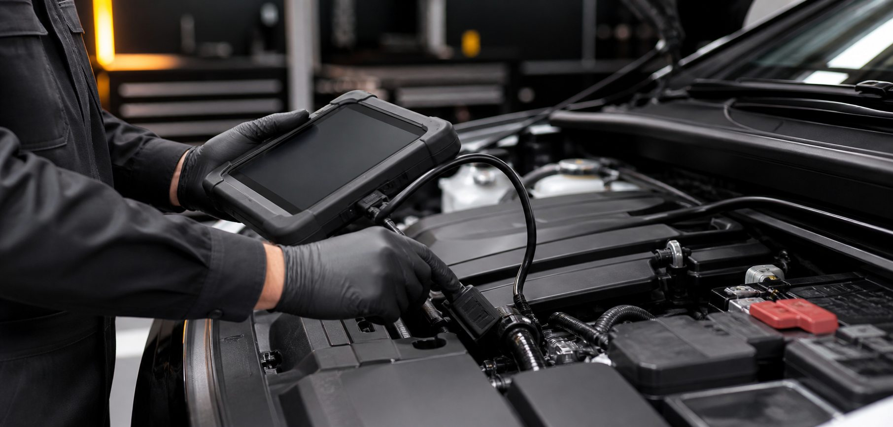
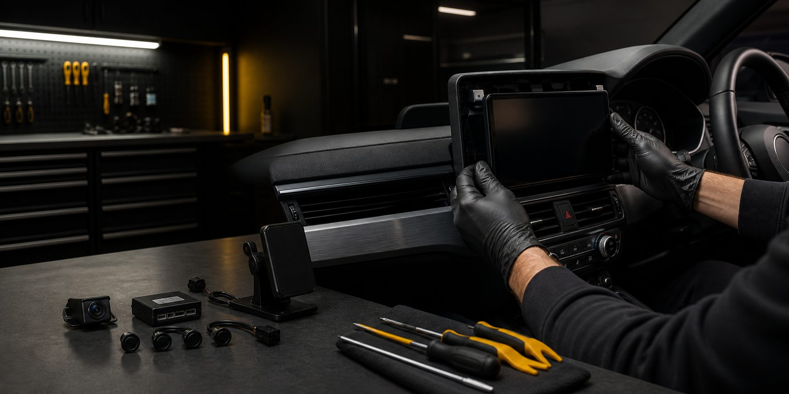
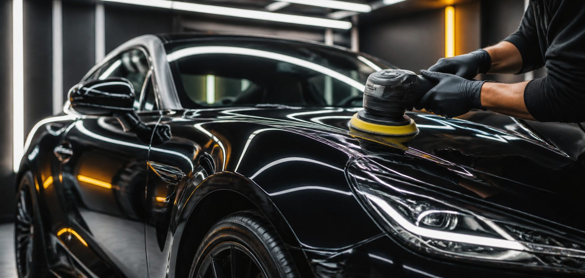
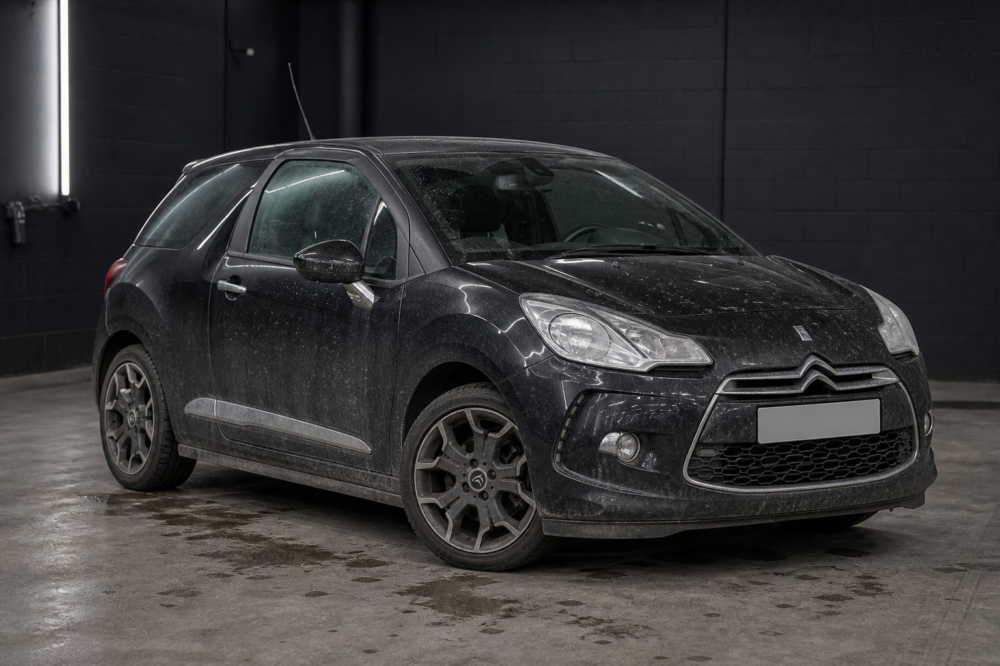
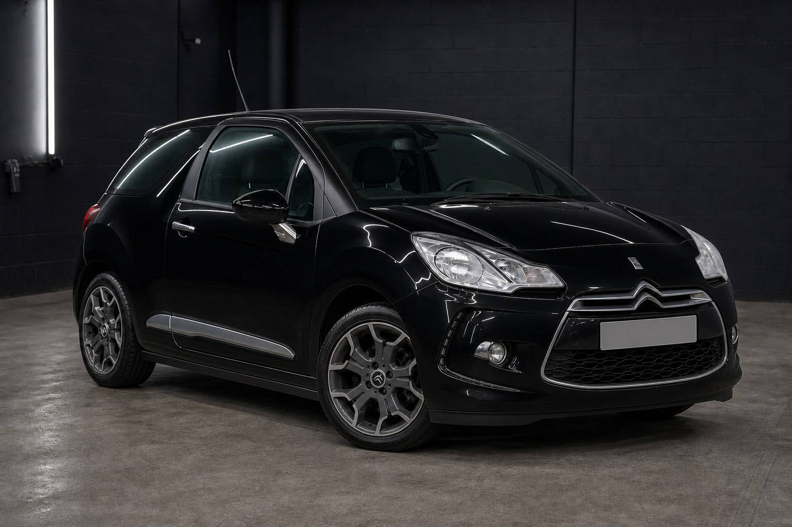

01
MECÂNICA
Diagnóstico, prevenção e reparo com uma visão completa do veículo.
- Diagnóstico eletrônico
- Manutenção preventiva
- Freios, suspensão e motor
CUIDADO AUTOMOTIVO 360°
Mecânica, acessórios e estética reunidos em uma estrutura preparada para cuidar de cada detalhe — do diagnóstico à personalização.
Atendimento técnico para veículos de diversas marcas, sem vínculo ou patrocínio.

QUEM SOMOS
Criamos uma jornada automotiva completa: diagnóstico claro, execução criteriosa e acabamento que devolve ao veículo sua melhor forma.
Este conteúdo institucional está preparado para receber a história real da empresa, seus fundadores, missão e valores. A estrutura foi pensada para comunicar proximidade sem abrir mão de rigor técnico.
O QUE FAZEMOS
Cada serviço começa com escuta e avaliação. A partir daí, montamos o caminho certo para seu veículo — sem soluções genéricas.
Diagnóstico, prevenção e reparo com uma visão completa do veículo.

02Tecnologia, proteção e conveniência instaladas com critério.

03Limpeza técnica, correção e proteção para preservar cada superfície.
MECÂNICA
Da rotina preventiva aos sistemas mais complexos, o serviço parte de uma avaliação técnica do estado e da necessidade real do veículo.
Diagnóstico automotivo e eletrônico, revisão geral e leitura de sistemas.
Ignição, injeção eletrônica, carburador, correias, óleo e filtros.
Freios, suspensão, direção, bateria e sistema elétrico.
Arrefecimento, ar-condicionado e verificações de eficiência.
ACESSÓRIOS AUTOMOTIVOS
Escolha tecnologia, proteção, áudio e conveniência para o seu veículo. A compatibilidade de cada item será confirmada antes da instalação.
Selecione quantos itens quiser. O resumo é atualizado em tempo real e segue pronto para o WhatsApp.
Filme de proteção aplicado em áreas compatíveis para ajudar a preservar a pintura.
Aplicação sob avaliação do vidro, acabamento desejado e regulamentação aplicável.
Mais referência visual em manobras, com instalação integrada ao veículo.
Assistência sonora para aproximar o veículo de obstáculos durante manobras.
Conectividade e entretenimento conforme o espaço e a arquitetura eletrônica.
Alto-falantes, subwoofer, amplificadores e upgrade de áudio sob projeto.
Posicionamento prático para o aparelho, respeitando ergonomia e visibilidade.
Energia para os dispositivos durante o trajeto, conforme conexão disponível.
Itens para tornar porta-malas e cabine mais práticos no uso diário.
Detalhes externos selecionados para complementar o visual sem excessos.
Itens de cabine e acabamento escolhidos para combinar com o veículo.
Aromatizantes para criar uma atmosfera agradável e pessoal na cabine.
Nenhum acessório selecionado.
ESTÉTICA AUTOMOTIVA
Conheça a transformação e monte uma combinação de serviços que faça sentido para o seu carro.
ANTES → DEPOIS
Do cuidado essencial ao acabamento premium, o resultado nasce da soma de processos corretos. Arraste e compare.


COMPARADOR INTERATIVO
CONFIGURADOR INTERATIVO
Selecione somente o que deseja. Você pode combinar limpeza, interior e tratamento externo no mesmo pedido.
NOSSO DIFERENCIAL
Uma experiência desenhada para tornar o cuidado automotivo mais simples, claro e interessante do começo ao fim.
Mecânica, acessórios e estética integrados em um só lugar.
Avaliação antes da execução e comunicação durante o processo.
Critério tanto no funcionamento quanto na apresentação.
Um simulador de corrida transforma seu tempo de espera.
ESPERE ENQUANTO JOGA
SEU CARRO ESTÁ SENDO PREPARADO.
Volante, pedais, câmbio, cockpit e monitor formam uma experiência de pilotagem pensada para transformar a espera em uma boa história.
PRÉ-AULA DE PILOTAGEM
Antes de acelerar, entenda o básico: frear em linha reta, buscar a tangência e voltar ao acelerador de forma progressiva.
EXPERIÊNCIA INTERATIVA
Uma volta rápida, direto no navegador. Mantenha o carro na pista e passe pelos checkpoints na ordem.
ONDE ESTAMOS
Os dados abaixo são placeholders centralizados no arquivo js/config.js. Troque uma vez e todo o site será atualizado.
DÚVIDAS FREQUENTES
Não encontrou sua dúvida? Fale com a equipe para uma orientação inicial.
Enviar uma mensagem ↗Atuamos em mecânica, acessórios e estética automotiva. A disponibilidade de cada serviço deve ser confirmada com a equipe.
Sim. O WhatsApp agiliza o primeiro contato, mas alguns serviços dependem de avaliação presencial antes do orçamento final.
Sim. O plano de revisão é definido considerando o veículo, histórico, quilometragem e recomendações técnicas aplicáveis.
O catálogo inclui proteção, tecnologia, áudio, conveniência, acabamento e fragrâncias. Cada instalação depende da compatibilidade com o veículo.
Lavagem técnica, higienização, descontaminação, polimento, proteção de pintura e tratamentos específicos de superfícies.
O simulador oferece uma experiência de pilotagem para clientes durante a espera. Regras de uso, disponibilidade e eventual custo devem ser configurados pela oficina.
VAMOS CUIDAR DO SEU CARRO?
Comece pelo WhatsApp. Nossa equipe orienta os próximos passos e agenda a avaliação quando necessário.
Solicitar orçamento ↗